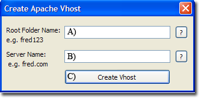
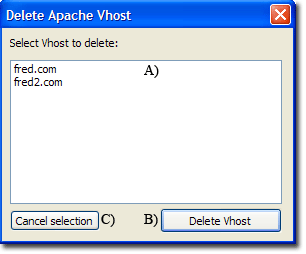

|
|
Apache Vhosts |
The Uniform Server Zero XIII is configured for name-based virtual hosting. This allows you to run any number of web sites from a single IP address. Each domain-name you host must first be registered and an "A" record created on a DNS server. This "A" record translates the domain-name to your IP address.
Note: For testing, "A" records are simulated using Uniform Server's PAC file (and or PC's hosts files) for details see Server Name.
Features
The main features of The Uniform Server’s Vhost configuration menu are:
- Include separate log files and server alias
- Auto enable when first vhost created
- Auto disable when last vhost deleted
- Port tracking follows main server port (defaults to port 80)
- Writes host name to Uniform Server's PAC file when vhost created
- Deletes host name from Uniform Server's PAC when vhost deleted
- If option enabled writes host name to PCs hosts when vhost created
- If option enabled deletes host name from PCs hosts when vhost deleted
Overview
Vhosts are configured using a separate configuration file UniServerZ\core\apache2\conf\extra\httpd-vhosts.conf.
This file requires enabling in Apache’s main configuration file UniServerZ\core\apache2\conf\httpd.conf
|
Search this file for the following line: #Include conf/extra/httpd-vhosts.conf |
Remove the hash "#" to enable as shown below: Include conf/extra/httpd-vhosts.conf |
Note: The above is automatically performed when using The Uniform Server Zero’s Vhost configuration menu.
Inform Apache to use Vhosts
Apache requires the directive <VirtualHost address:port> which instructs it to use virtual hosts and resolve an address on the specified port. The Uniform Server Zero uses *:${AP_PORT}, where the * is a wildcard meaning use all addresses and ${AP_PORT} is an environment variable that defaults to port 80. If you change the main server port using Apache > Change Apache Ports > Change Apache Port all Vhosts using ${AP_PORT} are automatically moved to this new port.
Port 80 is the standard web server listening port. This can be changed if required, for example, to port 8080 replace *:${AP_PORT} with *:8080. You need to manually edit the configuration file httpd-vhosts.conf
A separate VirtualHost directive is required for each Vhost used. If a diferent port is specified e.g. *:8080 a seperate Listen directive must be included.
Listen 8080 |
The main configuration file (httpd.conf) does not contain a Listen 8080 directive it is required and added to this vhost configuration |
Adding a Vhost
Each virtual host requires a separate configuration block. These blocks inherit their configuration from the main configuration file httpd.conf. Specifying an Apache directive in a Vhost block overrides that of the main configuration file. The advantage of this inheritance is to reduce number of Apache directives required for each Vhost. The absolute minimum required is to specify a DocumentRoot and ServerName.
Apache resolves a Vhost by matching its port and ServerName. On finding a match, the server's content is fetched from the folder specified by DocumentRoot. If it cannot find a match, it uses the first Vhost defined (the default). Note: to avoid conflicts, Apache uses a _default_ directive for the address of this first virtual host.
Example: to add a virtual host for fred.com on port 8080 and to serve content from folder UniServerZ\vhosts\fred, the minimum configuration required is:
Listen 8080
<VirtualHost _default_:${AP_PORT}>
DocumentRoot ${US_ROOTF_WWW}
ServerName ${US_SERVERNAME}
ErrorLog "logs/error.log"
CustomLog "logs/access.log" common
</VirtualHost>
<VirtualHost *:8080>
DocumentRoot ${US_ROOTF}/vhosts/fred123
ServerName fred.com
</VirtualHost>
|
The default Vhost maps to The Uniform Server’s folder www using environment variable ${US_ROOTF_WWW}. If you wish, this can be changed as well as the server name. The new Vhost fred.com maps to folder UniServerZ\vhosts\fred. This can be any folder you wish. All vhost root folders are created in the folder vhosts. This is not a strict requirment, but it is provided for portability (as when using a USB memory stick). Note: Port 8080 is shown as an example. Generally all Vhosts would use the standard port 80 using environment variable ${AP_PORT} (As mentioned above this is the main server port). |
Vhost additional Apache directives
Other Apache directives can be included in a Vhost block. Common directives are shown in this example block:
Note: These are manually added by editing the VHost configuration file.
<VirtualHost *:${AP_PORT}>
ServerAdmin webmaster@fred.com
DocumentRoot ${US_ROOTF}/vhosts/fred123
ServerName fred.com
ServerAlias www.fred.com *.fred.com
ErrorLog logs/fred.com-error.log
CustomLog logs/fred.com-access.log common
<Directory "${HOME}\vhosts\fred123">
Options Indexes Includes
AllowOverride All
Require all granted
</Directory>
</VirtualHost>
|
ServerAlias Allows you to access the server using sub-domains. Each sub-domain must have a corresponding DNS entry. Each Vhost can have a separate ErrorLog and CustomLog log file. If you do not specify these log files, the main server log files are used. Note: Separate log files will eat into your file allocation resources, depending on the total number of Vhosts you wish to host. This may become an issue . |
Hosts file automatic update
To test your web site without being connected to the Internet the default operation of Uniform Server Zero XIII is to add an entry to your PC’s hosts file. However this is not consistent with portability. This functionality is disabled as follows:
- Edit file C:\UniServerZ\home\us_config\us_config.ini
- Locate section [HOSTS]
- Change the following line: EditHostsFileEnabled=True To: EditHostsFileEnabled=False
The following assumes default operation hosts file automatic update enabled.
Create Apache Vhost -Detail
The following sub-menu allows you to quickly create a virtual host.
Apache > Apache Vhosts > Create Apache Vhost
This example creates a Vhost for fred.com and its corresponding root folder fred123:
The following actions are taken: |
 |
|
##====== VIRTUAL HOST ===========
#To enable uncomment next line
Include conf/extra/httpd-vhosts.conf
|
|
C:\UniserverZ\vhosts\fred123
|
|
.htaccess favicon.ico |
|
<VirtualHost *:${AP_PORT}>
ServerAdmin webmaster@fred.com
DocumentRoot ${US_ROOTF}/vhosts/fred123
ServerName fred.com
ServerAlias www.fred.com *.fred.com
ErrorLog logs/fred.com-error.log
CustomLog logs/fred.com-access.log common
<Directory "${HOME}\vhosts\fred123">
Options Indexes Includes
AllowOverride All
Require all granted
</Directory>
</VirtualHost>
|
|
if (shExpMatch(host, "*fred.com")) return "PROXY 127.0.0.1:80";
|
|
127.0.0.1 fred.com
|
Delete Apache Vhost -Detail
The following sub-menu allows you to quickly delete a virtual host.
Apache > Apache Vhosts > Delete Apache Vhost
This example deletes the Vhost fred.com and its corresponding root folder fred123:
The following actions are taken: |
 |
|
<VirtualHost *:${AP_PORT}>
ServerAdmin webmaster@fred.com
DocumentRoot ${US_ROOTF}/vhosts/fred123
ServerName fred.com
ServerAlias www.fred.com *.fred.com
ErrorLog logs/fred.com-error.log
CustomLog logs/fred.com-access.log common
<Directory "${HOME}\vhosts\fred123">
Options Indexes Includes
AllowOverride All
Require all granted
</Directory>
</VirtualHost>
|
|
C:\UniserverZ\vhosts\fred123
|
|
if (shExpMatch(host, "*fred.com")) return "PROXY 127.0.0.1:80"; |
|
127.0.0.1 fred.com
|